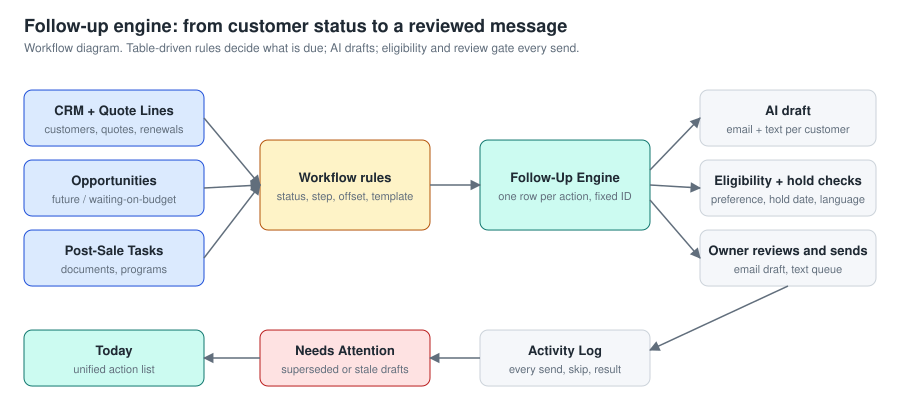
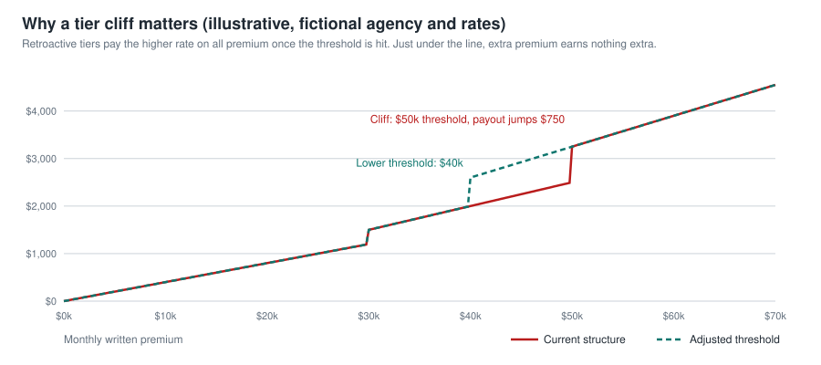
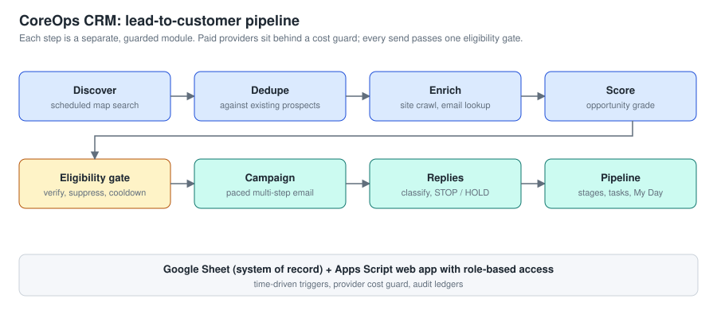
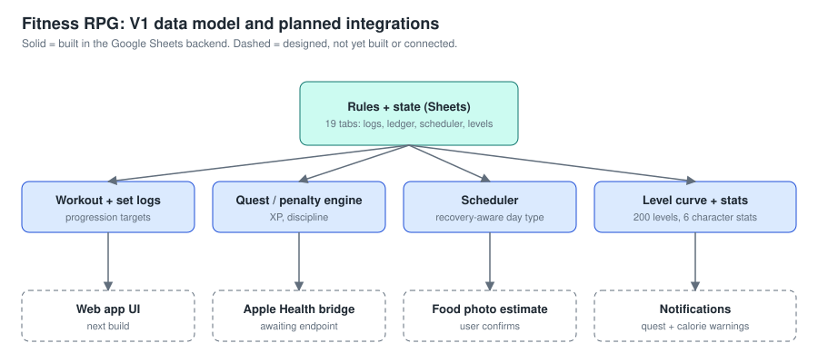

Marco Martinez
Business Operations | Systems Analysis | Workflow Automation
I find where a process leaks time or money, then build the system that fixes it. I run a commercial cleaning business and build my own CRMs, trackers, and automations around real daily work, using AI assistance and owning the design, rules, and testing.
1. Sales Follow-Up CRM
Turns each customer's status into a dated, reviewable action with an AI-drafted message and guardrails.

2. Commission Tracker and Compensation Analysis
A tiered commission model and what it revealed. Visuals use fictional agents and rates.

3. CoreOps CRM
Scheduled discovery, research, scoring, and guarded outreach with spend caps and an audit trail.

4. Fitness RPG
A gamified training system with a fully specified data model and rules.
